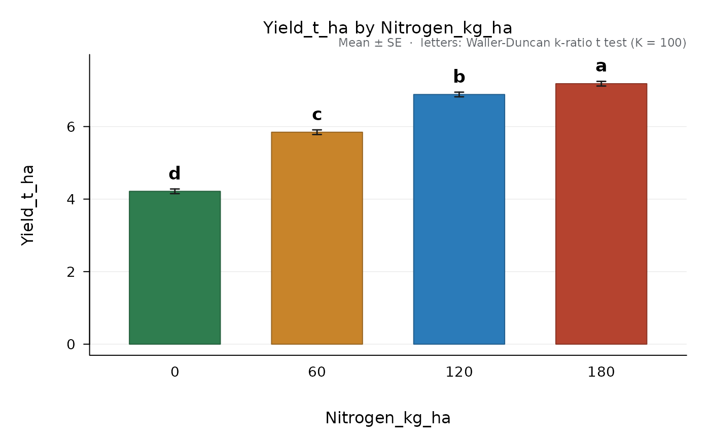

Bayesian separation of the means of a treatment factor (Waller and Duncan
1969). Instead of a fixed significance level, the user gives the ratio
K of the seriousness of a type I to a type II error; the critical t
then adapts to the evidence of the analysis of variance: with a large F
it approaches an unprotected LSD, with an F near 1 almost no difference is
declared. The result is an "ad_comparison" object, so print(),
plot() and plot_differences() work as with compare_means().
Arguments
- fit
An
"ad_anova"object fromdesign_anova().- factor
One treatment factor of
fit.- K
Seriousness ratio of type I to type II errors (default 100).
- alpha
Optional nominal level that sets
Kby the usual correspondence: 0.10 gives K = 50, 0.05 gives K = 100 and 0.01 gives K = 500. WhenNULL, thealphareported is the comparison-wise error rate implied by the critical t.
Value
An object of class "ad_comparison" (see compare_means()),
with the extra elements K, t_critical and F.
Details
The F, its degrees of freedom and the error come from the stratum that
tests the factor in fit (for instance Error a for the main plots of a
split-plot). With unequal replication every pair uses its own standard
error, as in the Tukey-Kramer form.
References
Waller, R. A. and Duncan, D. B. (1969). A Bayes rule for the symmetric multiple comparisons problem. Journal of the American Statistical Association 64, 1484-1503.
Examples
fit <- design_anova(maize_nitrogen, "Yield_t_ha", "Nitrogen_kg_ha", block = "Block")
wd <- waller_duncan(fit, "Nitrogen_kg_ha")
wd
#>
#> Waller-Duncan k-ratio t test (K = 100), alpha = 0.0672
#> Response: Yield_t_ha compared: Nitrogen_kg_ha
#> Error: Residual error (MS = 0.01643, df = 9)
#> Bayesian k-ratio rule: K = 100, F = 437.3 on 3 and 9 df, critical t = 2.0803 (comparison-wise alpha about 0.067).
#> Minimum significant difference = 0.1885
#>
#> Nitrogen_kg_ha n mean se raw_mean sd group
#> 180 4 7.183 0.06409 7.183 0.2943 a
#> 120 4 6.885 0.06409 6.885 0.3663 b
#> 60 4 5.845 0.06409 5.845 0.2978 c
#> 0 4 4.215 0.06409 4.215 0.3101 d
#>
#> Means sharing a letter do not differ.
plot(wd)
